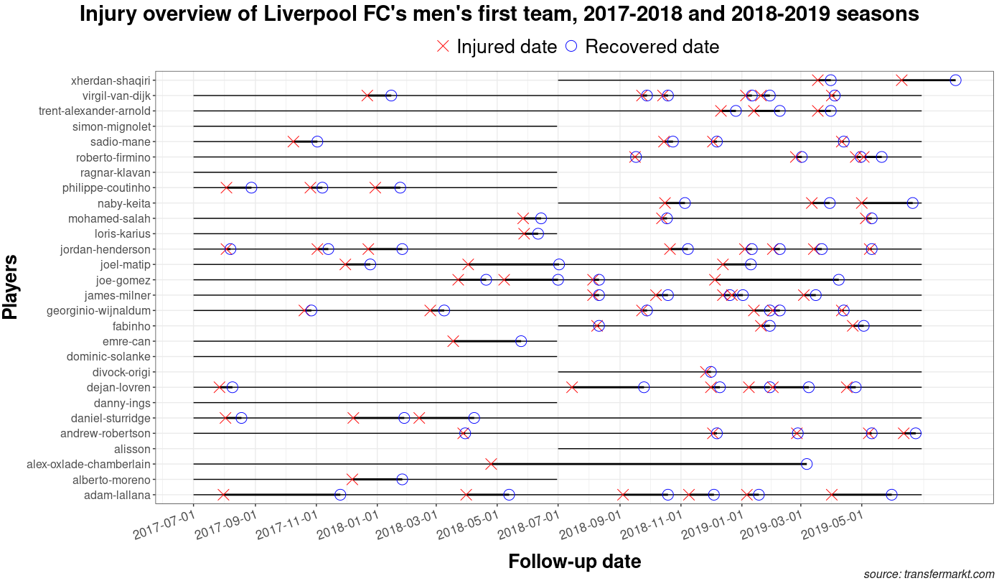

Overview
injurytools is a package designed for the field of Sports Medicine. It simplifies the data analysis workflow by providing convenience functions and handy tools for sports injury and illness data.
The functions can be classified into: (a) sports injury and illness data preparation, (b) descriptive analyses and (c) data visualization routines. Further analyses, such as the estimation of the risk of injury/illness (any sports-related health problem) with other covariate effects, can be performed outside of injurytools, whether the event of health problem is viewed as count or time-to-event data.
To get an overview of the package, see the Articles section.
In practice, the package can automate specific descriptive reports that are routinely generated for sports injury and illness surveillance.
Installation
To install from CRAN:
install.packages("injurytools")To install the most current version from GitHub:
devtools::install_github("lzumeta/injurytools")Usage
Functions for data preparation start with prepare_*(), those for estimating epidemiological measures start with calc_*(), and those for data visualization with gg_*().
The below outlines at a glance how injurytools can help to get a comprehensive picture of sports injury and illness data:
library(injurytools)
library(ggplot2)
(p <- gg_photo(injd,
title = "Injury overview of Liverpool FC's men's first team, 2017-2018 and 2018-2019 seasons",
by_date = "2 month") +
## plus some lines of ggplot2 code..
xlab("Follow-up date") + ylab("Players") +
labs(caption = "source: transfermarkt.com") +
theme(axis.text.x.bottom = element_text(size = 13, angle = 20, hjust = 1),
axis.text.y.left = element_text(size = 12),
axis.title.x = element_text(size = 20, face = "bold", vjust = -1),
axis.title.y = element_text(size = 20, face = "bold", vjust = 1.8),
legend.text = element_text(size = 20),
legend.position = "top",
plot.caption = element_text(face = "italic", size = 12, colour = "gray10"),
plot.title = element_text(face = "bold", hjust = 0.5, size = 22),
plot.title.position = "plot")
)
p +
## add days lost info
geom_text(aes(x = date_injured + days_lost/2, y = person_id, label = paste0(days_lost, " days")),
vjust = -0.5, data = injd) +
scale_y_discrete(expand = expansion(mult = 0.05))
p +
## add injury info
geom_text(aes(x = date_injured + days_lost/2, y = person_id, label = injury),
vjust = -0.5, data = injd) +
scale_y_discrete(expand = expansion(mult = 0.05))How to contribute
If you have problems with the package, find any bugs, or have suggestions for improvements, please feel free to open a GitHub issue or touch us directly via email. We also welcome your feedback.